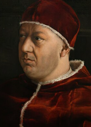
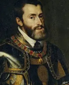
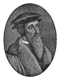
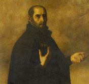
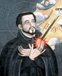

メディチ家出身の教皇
レオ10世

贖宥状（免罪符）とは、購入すれば一切の罪が消滅し必ず天国へいけるとされた証書のことです。当時ドイツは領邦に分裂していたため「ローマの牝牛」（ドイツはローマの資金源）と呼ばれていました。
ドイツのヴィッテンベルク大学神学教授 マルティン＝ルター マルティン＝ルター（1483〜1546） ドイツの神学者。1517年に免罪符批判の「九十五カ条の論題」を教会の扉に貼り出し、宗教改革を起こしました。聖書をドイツ語に翻訳し、誰もが聖書を読めるようにしました。 は、1517年にヴィッテンベルク城教会に「九十五カ条の論題」を貼り出しました。
「人は善行ではなく、神への信仰のみによって救われる。信仰とは聖書に従って生きることだ」と主張しました。
活版印刷術の改良により、論題はまたたく間にドイツ各地に広まりました。神聖ローマ皇帝カール5世 
1555年のアウグスブルクの宗教和議でドイツ国内のルター派が公認されました。ただし個人の信仰の自由は認められず、領主の宗派に従わされました。
カルヴァン

カルヴァン派はヨーロッパ各地に広がり、フランスではユグノー、イギリスではピューリタンと呼ばれました。
ヘンリー8世 ヘンリー8世（在位1509〜1547） イギリス国王。6回結婚したことで有名。離婚を認めないローマ教皇と対立し、ローマ教会から独立してイギリス国教会を設立しました。 は侍女アン＝ブーリンと結婚しようとしましたが、カトリックは離婚を認めなかったためローマ教皇と対立しました。ローマ教会から独立してイギリス国教会を設立し、修道院の廃止・財産没収を行いました。
後にヘンリー8世とアン＝ブーリンの娘 エリザベス1世 エリザベス1世（在位1558〜1603） イギリス女王。統一法を制定してイギリス国教会を確立し、スペインの無敵艦隊を撃破するなど、イギリスを強国にした名君。ルネサンス文化（シェークスピアなど）も彼女の時代に栄えました。 が統一法を制定し、国王が長を兼ねるイギリス国教会を確立させました。
1545年、トリエント公会議でカトリック教会は教皇の至上主義を確認し、宗教裁判所の設置を決議しました。
1534年、スペイン貴族出身の元軍人
イグナティウス＝ロヨラ
 
1549年、ザビエルは日本の鹿児島に上陸してキリスト教を布教しました。このようなカトリック勢力の巻き返しを反宗教改革といいます。